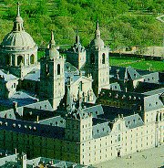
Escorial spojuje několik funkcí. Jde zároveň o palác i klášter, kterému vévodí monumentální kostel.
Pikareskní román
Na rostoucí chudobu ve Španělsku reaguje pikareskní román. Jeho hlavním hrdinou byl šibalský darebák (pícaro), který přežívá díky své chytrosti a drzosti. Pikareskní román ukazuje život nejnižších společenských vrstev – sluhů, žebráků a různých podvodníků. K nejvýznamnějším dílům tohoto žánru patří anonymní text Život Lazarilla z Tormesu (1554) a romány Matea Alemána (1547-1614) Život Guzmána z Alfarache a Francisca de Quevedy y Villegase (1580-1645) Život rošťáka.
Charakterizuj postavu Lazarilla z Tormesu
Jaký je jeho opatrovník?
Na čem je založena komika příběhu?
|
RENESANČNÍ ŠPANĚLSKO
Španělská kultura byla velmi ovlivněna arabským uměním. K nejvýznamnějším stavbám patří palác Escorial [eskorjal] nedaleko Madridu, který nechal postavit král Filip II. (1527-1556). Ve Španělsku působil malíř El Greco [el greko] (1541-1614), jehož přezdívka napovídá, že byl řeckého původu. Maloval hlavně portréty (Kardinál Fernando Niño de Guevara) a obrazy s náboženskou tematikou (Pátá pečeť Apokalypsy). Období 16. a 17. stol. nazýváme zlatým věkem španělského dramatu a literatury. Velké oblibě se těšily rytířské romány. Kromě tradičních náboženských her a meziher vznikají tzv. komedie pláště a dýky, ve kterých se střetávají láska a čest (nerovné společenské postavení). Provozování divadelních představení bylo opakovaně zakazováno (1598, 1765) a omezováno.
Život Lazarilla z Tormesu
První pikareskní román vyšel anonymně, protože se autor snažil vzbudit dojem, že jde o autentické vyprávění skutečných zážitků jistého Lazarilla z Tormesu. Ten se po smrti otce ocitne postupně ve službách slepého žebráka, lakotného kněze, chudého šlechtice a prodavače odpustků. Neustálé hladovění i špatné zacházení přežívá pouze díky důmyslným podvodům a lžím.
Román okamžitě zakázala španělská inkvizice, ale byl tak populární, že se ho roku 1620 rozhodl spisovatel H. de Luna rozšířit o další příhody.
|
Historie
V roce 1492 byly z Pyrenejského poloostrova vyhnáni muslimové a židé a janovský mořeplavec Kryštof Kolumbus objevuje pod španělskou vlajkou Ameriku. Španělsko a Portugalsko si rozdělují sféry vlivu v nově objevených zemích. Cortés dobývá říši Aztéků (1519) a Pizarro říši Inků (1534). Karel V. Habsburský (1500-1558) se stal postupně králem Nizozemí, Španělska (včetně zámořských kolonií) a jižní Itálie a také německým císařem (bratru Ferdinandovi dobrovolně předal Rakousko). V letech 1598 až 1700 rozhodují za krále jejich oblíbenci.
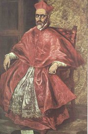
El Greco: Kardinál Fernando Niño de Guevara
|
Miguel de Cervantes Saavedra (1547-1616)
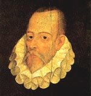
Miguel de Cervantes [migel de servantes] se účastnil bojů s Turky. Ve slavné bitvě u Lepanta přišel o levou ruku a při návratu do vlasti ho zajali piráti. Vykoupen byl až po 5 letech. Zbytek života prožil v chudobě. Kromě románu Důmyslný rytíř don Quijote de la Mancha napsal řadu divadelních her (Lišák Pedro) a soubor mravoučných próz Příkladné novely.
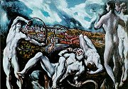
El Greco: Laokoon
|
Miguel de Cervantes: Důmyslný rytíř don Quijote de la Mancha
Hlavním hrdinou Cervantesova dvoudílného románu Důmyslný rytíř don Quijote de la Mancha je šlechtic a snílek Alonzo Quijano, který podlehl četbě rytířských románů. Stárnoucí „rytíř smutné postavy" chce dobýt slávu, aby získal srdce vysněné krásky (Dulcinea). Vydává se za ní v sedle ubohé herky (Rocinante) společně s věrným sluhou (Sancho Panza), který sice nepodléhá pánovým iluzím, ale těší se na ostrov, který mu don Quijote slíbil… Don Quijote cestuje španělským venkovem a zažívá řadu dobrodružství: bojuje s větrnými mlýny, stádem ovcí a měchy vína, zastane se galejníků, několikrát je zbit, ale dále žije ve svém ideálním světě. Nakonec se setkává s Dulcineou, prohrává v souboji s „rytířem" Bílé luny a musí se vrátit domů. Uvědomuje si, že žil iluzemi, a umírá.
Cervantes paroduje ve své době velmi oblíbené rytířské romány, ale jeho kniha jde dál. Don Quijote je postava zároveň komická i tragická, svět rytířských ideálů je konfrontován s přízemní skutečností a jednotlivé situace nevyznívají vždy v neprospěch titulní postavy.
|
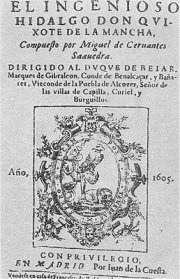
Titulní list Cervantesova románu Důmyslný rytíř don Quijote de la Mancha
Jaký je Sancho Panza?
Jaký je don Quijote?
Co si o nich myslíš? Která z obou postav je ti bližší? Proč?
Koho označujeme slovem donkichot?
Znáš někoho podobného ve svém okolí?
|
Lope de Vega (1562-1635)
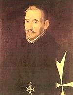
Lope de Vega prožil velmi dobrodružný život. Byl vojákem i knězem a především velmi plodným autorem (prý napsal přes 1500 her, dochovalo se jich 770). Dodnes se uvádějí jeho dramata Ovčí pramen (Fuente Ovejuna [ovechuna]) a Zahradníkův pes, zpracoval i námět z české historie – drama Císařská koruna Otakarova vypravuje o Přemyslu Otakarovi II. a jeho manželce. Veršované pojednání Nové umění skládati komedie shrnuje jeho názory na divadelní tvorbu. Neuznává antický zákon trojí jednoty a požaduje, aby byla každá situace nebo i postava charakterizována jinou básnickou formou (metrem).
|
Lope de Vega: Zahradníkův pes
Komedie „pláště a dýky" Zahradníkův pes je postavena na jednoduché zápletce. Hraběnka Diana se zamiluje do svého sekretáře Theodora. Konvence jí ale zakazují vztah s neurozeným mužem. Naštěstí vše vyřeší Theodorův mazaný sluha Tristan, který mu obstará šlechtického otce… Konečně může hraběnka bez obav oznámit svůj sňatek s Theodorem.
Lope de Vega: Ovčí pramen
Veršované drama Ovčí pramen (Fuente Ovejuna) vychází ze skutečné události. Do vsi Ovčí pramen se po vítězném tažení navrací komtur Fernán Gómez a bezohledně zde uplatňuje svou moc. Přímo od oltáře odvleče rychtářovu dceru a zneuctí ji. Vesničané Gómeze zabijí a při vyšetřování zločinu svorně odpovídají, že ho zavraždil Ovčí pramen, i když všem obyvatelům vesnice hrozí, že dostanou trest smrti. Král nakonec vesničanům odpouští, protože Gómez ohrožoval nejen je, ale i jednotu země.
|
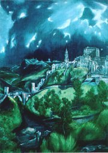
El Greco: Pohled na Toledo
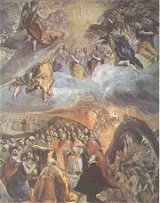
El Greco: Sen Filipa II.
|
Portugalsko
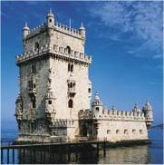
|
RENESANČNÍ PORTUGALSKO
16. stol. bylo dobou koloniálního i kulturního rozkvětu Portugalska. V architektuře se prosazuje tzv. manuelský styl (Belémská věž v Lisabonu, klášter v Tomaru), který ovlivnila arabská zdobnost. Velmi oblíbené byly romány, zvláště rytířské a pastýřské. Portugalský spisovatel Jorge de Montemor napsal ve španělštině pastýřský román Diana. Fernăo Mendes Pinto je autorem cestopisného románu Putování, který se odehrává v různých částech Asie (Arábie, Indie, Čína, Japonsko...). Vrcholem literární tvorby jsou díla Luíse de Camõese.
|
Historie
Na začátku 12. stol. získalo Portugalsko nezávislost na Kastilii. Králové Jindřich Mořeplavec (1394-1490) a Manuel Veliký (1495-1521) podporovali zámořské výpravy (Madeira, Azory, Kapverdy, Brazílie…). Postupný úpadek nastává v době personální unie se Španělskem (1580-1640).
|
Luís de Camões (1524-1580)
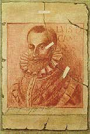
Portugalský básník Luís de Camões [lujš dy kamojnš] pobýval v Indii. Je autorem národního eposu Lusovci a řady milostných básní, které vyšly až po jeho smrti.
|
Luís de Camões: Lusovci
Portugalci dlouho neměli národní epos, a proto se ho Luís de Camões rozhodl složit. Jeho Lusovci (nazváno podle praotce Portugalců Lusa) velmi věrně líčí portugalskou historii a objevnou plavbu Vasco da Gamy kolem Afriky až do Indie. Děj je zasazen do mytologického rámce (Venuše mořeplavcům pomáhá, Bakchus se jim snaží uškodit), ale autor zůstává pravověrným křesťanem a věří, že Portugalci jsou předurčeni k šíření katolické víry v objevených zemích.
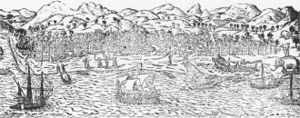
Indická Kalakta na dobové ilustraci
|
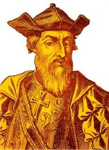
Mořeplavec Vasco da Gama obeplul africký mys Dobré naděje a roku 1498 dorazil do indické Kalkaty.
O čem pojednává ukázka?
Co si myslíš o objevných plavbách a chování Evropanů k domorodému obyvatelstvu?
|
Internetové stránky
Cervantes
Don Quijote, celý text
Camões, informace
Vasco da Gama, informace
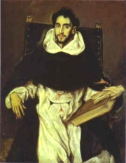
El Greco: Otec Felix Hortensio Paravicino
|
Doporučená četba
Arbo, Sebastián Juan: Cervantes, přel. V.Urban, Odeon, Praha 1971
Bělič, Oldřich: Španělská literatura
Bělič, O.: Španělský pikareskní román a realismus, Praha 1963
Camões, Luíz de: Lusovci, přel. K.Bednář, SNKLHU, Praha 1958
Camões, Luís de: Trýzeň i útěcha, přel. Lidmilová, Hiršal, Mladá fronta, Praha 1997
Cervantes, Miguel de: Důmyslný rytíř don Quijote de la Mancha (2 díly), přel. Z.Šmíd
Cervantes, Miguel de: Numancie, Pedro de Urdemalas, Mezihry, přel. Slavík, Forbeský, SNKLU, Praha 1962
Cervantes, Miguel de: Příběhy dona Quijota, převyprávěl J.John, Praha 1978
Cervantes, Miguel de: Příkladné novely, přel. Z.Šmíd
Dějiny portugalské literatury
Dějiny Španělska, NLN, Praha 1995
Dějiny španělské literatury
Dyk, Viktor: Zmoudření dona Quijota (divadelní hra)
Mikeš, V.: Divadlo španělského zlatého věku, Praha 1995
Slovník spisovatelů Španělska a Portugalska
Tři španělské pikareskní romány, přel. Bělič, Hodoušek, Forbeský, Odeon, Praha 1980 (Život Lazarilla z Tormesu, Život rošťáka, Život a skutky Estebanilla Gonzáleze)
Vega, Lope de: Ovčí Pramen, přel. O.Fischer, Praha 1952
Vega, Lope de: Zahradníkův pes, přel. E.Frynta, SNKLU, Praha 1962
|
Připrav si referát o některé z uvedených knih nebo internetových stránek.
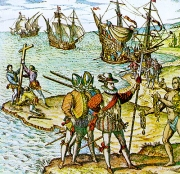
Janovan Kolumbus objevil Ameriku pod španělskou vlajkou
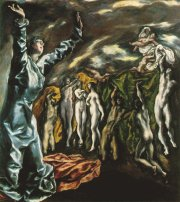
El Greco: Pátá pečeť Apokalypsy
|
|